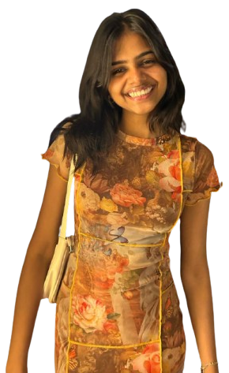

About Me
I'm an aspiring graphic designer passionate about creating visually appealing designs that tell a story.Being a daughter to an artist,I have been fascinated by the creative world since my early years.I’m 19 and an aspiring graphic designer driven by the endless love of creation.I create my own ideas and give them a visual appeal.
Projects

Project 1
This typographic poster for “Andhadhun” uses a striking contrast of black and white to symbolize the difference between a blind person and a sighted one. The piano tiles, arranged across the poster, represent the film’s central motif of music and percetion.The alternating black and white tiles visually mimic the contrast between light and dark, echoing the theme of vision versus blindness

Project 2
By adding unique, customized characters to each card, the game becomes more engaging.Enhancing UNO cards by incorporating personalized characters increase their visual appeal.These characters are designed to reflect the personalities of the particular colours.The redesign of the UNO introduces colour-themed characters that embody specific emotions, enhancing players'emotional engagement and making the game more immersive.

Project 3
Made a logo for a coffee shop named‘Cosmo’ The cup handle in the logo depicts the letter ‘C’ and the ‘coffee bean’ at the tip of the steam coming out of the cup,adds to the aesthetic of the logo.I went with color shades of brown to match the coffee.